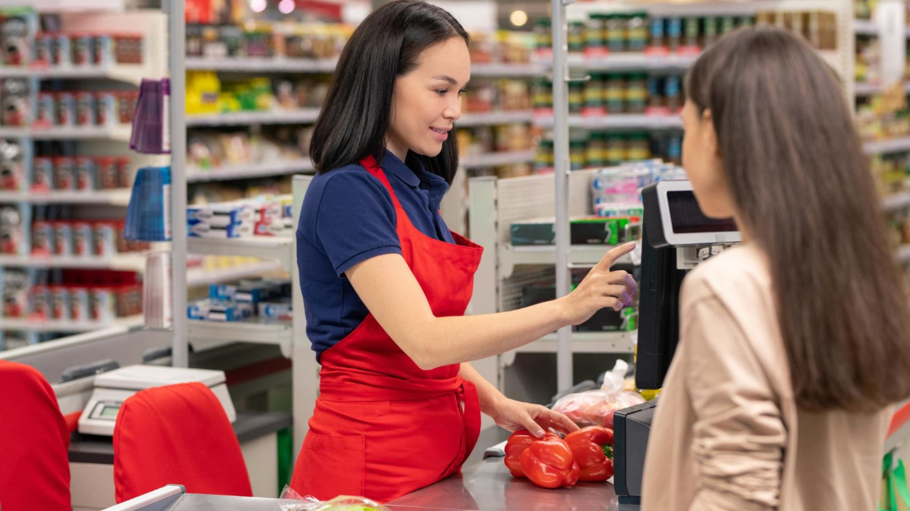

When customers visit a departmental store, they expect a smooth shopping experience quick checkouts, accurate bills, and easy payment options. But making sure everything runs smoothly can be a challenge. This is where a POS system comes in. It's not just for handling payments, it helps improve every part of the shopping process, making things easier for both you and your customers.
Let’s take a look at how a POS system can help boost customer satisfaction in your store.
1. Faster Checkouts
No one likes waiting in long lines, especially when they’re in a rush. A POS system speeds up the checkout process by automatically calculating prices, taxes, and discounts. This means customers can get through the counter faster, reducing wait times and improving overall satisfaction.
2. Fewer Mistakes
Human errors in billing can be frustrating for customers. A simple mistake like forgetting to apply a discount or miscalculating a total can create issues. POS systems help avoid these problems by ensuring accurate billing every time. Customers appreciate getting the correct total without having to double-check their receipts.
3. More Payment Options
Today, people want to pay the way that’s most convenient for them. Cash is still common, but more customers are using cards, UPI, or mobile wallets. A POS system can handle all these payment methods, giving your customers more flexibility and making their shopping experience easier.
4. Real-Time Inventory Tracking
Running out of stock on popular items is never good for business. A POS system updates your inventory in real-time, so you always know what’s in stock and what needs replenishing. This means you won’t disappoint customers by being out of stock on items they want to buy.
5. Personalised Shopping
With a POS system, you can keep track of your customers' purchase histories. This allows you to offer personalised service, like recommending products based on past buys or offering loyalty discounts. Customers feel valued when stores recognise their preferences and make shopping easier for them.

6. Simplified Returns and Exchanges
Returns and exchanges are part of retail, but they don’t have to be complicated. A POS system makes it easy to process returns and exchanges by keeping track of all transactions. This saves time and reduces frustration for both your staff and customers.
7. Clearer Receipts
POS systems generate itemised receipts, making it easy for customers to see what they’re paying for. They can check the prices, discounts, and taxes, which helps avoid confusion and ensures transparency. Customers appreciate a clear, organised receipt when they leave your store.
8. Improved Customer Service
When a POS system handles the heavy lifting of billing and inventory, your staff has more time to focus on assisting customers. Whether it’s answering questions or helping them find the right product, your team can offer better service when they’re not bogged down with manual tasks.
Why Choose Access Computech for Your POS Needs
When it comes to improving customer satisfaction in your departmental store, having the right POS system makes all the difference. At Access Computech, we offer reliable and user-friendly POS systems designed to meet your store's unique needs.
With easy integration, quick billing, real-time inventory tracking, and multiple payment options, our POS systems ensure a smooth experience for both your staff and customers.
Choose Access Computech to simplify your store operations and create a shopping experience that keeps customers happy and loyal.